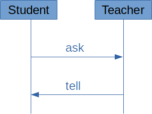
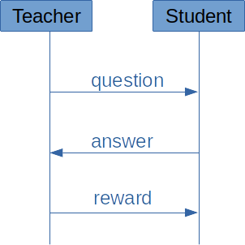
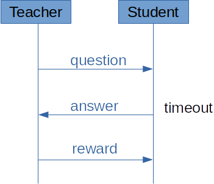
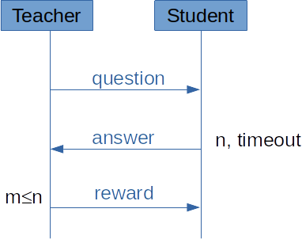
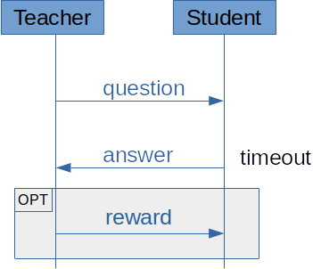
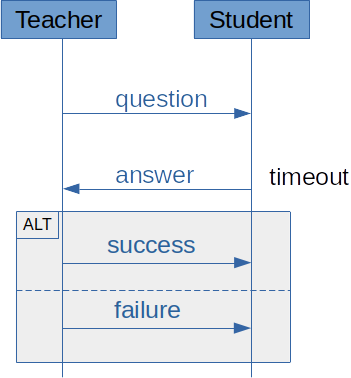
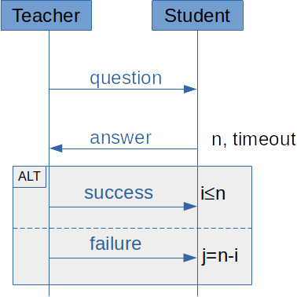
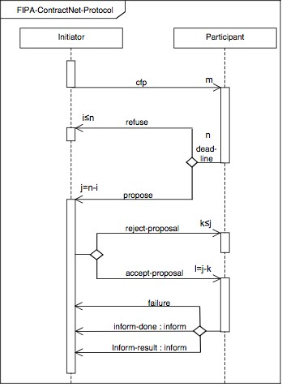

3.1. Indirect interactions¶
Indirect interactions is the main interaction mechanism in MAS. Remember the PRS architecture:

Agents can only act (and perceive) from their environment. The idea behind indirect interactions is that agents that act on shared variables in the environment interact through this variable, even if they don’t have the intention to do so.
1. Blackboards¶
The first multiagent platforms in the 90s implement blackboards in the environment. A blackboard is an array (or a python list) in which agents can write information that can be used by other agents.
Let us consider the Alice-Bob example again:
from time import sleep
from random import *
from threading import Thread
class Environment:
v = 0
def act(self):
self.v = 1 - self.v
print(self.v)
def perceive(self):
return self.v
class Agent(Thread):
def __init__(self, name, preferred_value, env):
Thread.__init__(self)
self.name = name
self.env = env
self.pv = preferred_value
def run(self):
while True:
self.procedural_loop()
def procedural_loop(self):
if self.env.perceive() != self.pv:
self.env.act()
class Runtime:
def __init__(self):
e = Environment()
Agent("Alice", 0, e).start()
Agent("Bob", 1, e).start()
Runtime()
Both agents act on a variable named “v” in the environment, which they try to maintain to their preferred value (note that we used the asynchronous version, but that was for a change; it would be the same in a synchronous implementation or in a Mesa model). The list of variables has to be defined in the environment, which does not make our implementation very generic or reusable. Providing the environment with a blackboard can achieve this feature.
In the following example, we implemented a blackboard as a Python dictionary in which agent can set variable values.
class Environment:
blackboard = {}
def act(self,name,value):
self.blackboard[name] = value
def perceive(self,name):
if name in self.blackboard:
return self.blackboard[name]
return None
Based on this, the code for Alice and Bob agents could be:
class Agent(Thread):
def __init__(self, name, preferred_value, env):
Thread.__init__(self)
self.name = name
self.env = env
self.pv = preferred_value
def run(self):
while True:
self.procedural_loop()
def procedural_loop(self):
if self.env.perceive("v") != self.pv:
self.env.act("v",self.pv)
The idea is that all agents can now share variable or exchange any sort of information on the blackboard.
2. From Blackboards to Stigmergy¶
Blackboards architectures however were not very popular. There are two main reasons. The first one is that they assume a centralised mechanism (the blackboard) that is a possible failure point in the MAS. Some distributed architectures proposed distributed blackboards but they were soon abandoned in the profit of direct interactions (see next section). The other limit of blackboards is that all agents perceive the whole environment. Distributed AI designers tried to propose other models in which each agent has a local view on the environment, as we did in the Money example with agents exchanging wealth on their own cell only.
Such model gave rise to spacially-situated agent systems in which agents move on a spatial model (generally, a two dimensions grid) that they can observe. The content of each cell can be a mini-blackboard or any other data structure. Here is a possible implementation of such an environment :
class Environment:
def __init__(self,width,height):
self.grid = [ [{} for i in range(width)] for j in range(height) ]
def act(self,agent,name,value):
(x,y) = agent.get_current_position()
self.grid[x][y][name] = value
def perceive(self,agent,name):
(x,y) = agent.get_current_position()
bb = self.grid[x][y]
if name in bb:
return bb[name]
return None
class Agent():
def __init__(self, name, env, initial_position):
self.name = name
self.env = env
self.pos = initial_position
def get_current_position(self):
return self.pos
def move(self,new_position):
self.pos = position
...
The name stigmergy comes from the behaviour of some social insects such as ants or termites. Such animals drop pheromones in the environment as they move around. These pheromones give information to other members of the colony about their movements (where they were, how long ago they were here…) but also about what they were doing at that time (carrying food, hunting…). Spatially situated agent model with indirect interaction took their inspiration in this biological model.
One important characteristics of stigmergy is that the information contained in the pheromones fades away with time. Multiagent models that implement stigmergy generally have a similar mechanism to alter the value of some variables. This means that the environment also acts on its variable values. This can be used by agent to follow another agent’s track (using gradient descent) or to improve space coverage by searching for spaces with lower values of pheromones.
Note that agents in stygmergic environments generally are reactive agents (although nothing forbids them from being cognitive, see session 1, section 2).
Practice yourself (optional)¶
If you have time, try to implement a stigmergic model of a simple multiagent systems in Python (without using the Mesa library):
The environment is a 10x10 grid space. It offers methods to move randomly in any of the four possible directions.
The system runs in a synchronous manner.
Each cell has a value, initially set to 100 that decreases by 1 at each turn.
Agents can either move or remain on a cell at each turn. When they choose to remain, the value of the cell is increased by 10.
Agents try to maintain all cells values above 50.
If you are good with graphical interfaces (e.g. tkinter), you can draw the grid’s values and embed your runtime in the graphical mainloop to observe the simulation.
3. From Stigmergy to Artefacts¶
In the early 2000s, researchers in MAS began to question the environment: How passive should it be? Since stigmergic environments change their values with time, what really makes them different from an agent on which other agents would act? What is the difference between an object (in the environment) and an agent?
All these questions gave rise to a model called Agents and Artifacts, proposed by Alessandro Ricci and his colleagues from the University of Bologna. The A&A model became very popular because it unified different theories and proposed a clear distinction between objects, services and agents. Understanding all subtleties of A&A is out of the scope of this course and only few platforms use this model. However, its theoretical value is of importance.
To make a long story short, the environment in A&A is a set of artifacts which behave like reactive services. Each artifact has a set of variables that can be modified by agents (inputs), and a set of variables that can be observed by agents (outputs). Agents can create artifacts in the environment and tag them for other agents to notice them. Whenever an agent sets input values to the artifact, it begins its computation in an asynchronous manner w.r.t. other agents or artifacts. When this computation is over, it informs the initiator agent. Moreover, artifacts have some documentation (e.g. using the Web Service Description Language) for agents to interact with them without a priori knowledge. However artifacts are not autonomous, contrary to agents: they simply compute whatever is requested, they have no internal decision mechanism.
Conclusion on Indirect Interactions¶
Indirect interactions is still largely used, especially in Multi-Agent Based Simulation (as you did in the Prey-Predator simulation during the previous session). However, the most widespread interaction model in multiagent platforms (thanks to the FIPA stantard) is based on direct interactions that we present in the next section.
3.2. Direct interactions¶
1. The Theory¶
Direct interactions in multiagent systems relies on a very strong assumption: the intention to communicate. Whereas agents in a stigmergic environment do not explicitely communicate, direct interactions means that agents know they are exchanging information with another agent. They control the communication.
The first consequence is that communication is done by sending messages from an agent to another (or to a group or others). There are a couple of theories that you need to understand before we actually implement direction communication in a MAS.
Communication levels¶
Communication has been widely studied in mathematics and computer science in the second half of the XXst Century, after the publication of Claude Shannon’s A Mathematical Theory of Communication in 1948. One main contribution in the 70s is the Open Systems Interconnection (OSI) model that is now an ISO standard for computer networked systems, with 7 layers to describe the communication. However other models were proposed to study all sorts of communications.
Let us first take a look at some of these communication layers:
The physical layer which is responsible for the transport of the message from one agent to another. Human beings cannot talk without ambiant air. Bees require visual space to perform their “dance” that indicates flowers positions. Physical layers are always required, and MAS won’t be an exception;
The syntactic layer which defines how elements of the message must be arranged. In human communication, we share grammatical rules that decide how sounds must be arranged to form words. Similarly, computer agents will require some message structure to ensure that they can communicate with each other. To this goal, we shall use a well-defined Agent Communication Language (ACL);
The knowledge layer which defines the meaning of the message content. Most of us hardly understand the meaning of bird songs, but ethnologists proved that birds can exchange different kinds of information with their songs. Same thing for the ants with their pheromones. And, of course, words in our language do have specific meanings that need to be shared among a group of people for them to understand each others. This is also true for agents: the content of the messages must be attached to so-called ontologies that define how these concepts relate to the agent’s activity.
The protocol layer which defines some rules for the communication. When you call a friend on the phone, when you write an email, people expect you to exchange some messages that have no other purpose than establishing the communication (e.g. saying hello, saying goodbye, etc). Similarly, MAS engineering requires to define communication protocols for the agents to be able to perform the task the system was designed for.
In the following subsections, we will see how these layers are achieved in agent communication models.
Speech Acts Theory¶
The most important model for agent communication was not designed by a computer scientist. It is the Speech Acts Theory that was invented in 1955 by the philosopher John L. Austin and described in his famous book How to do things with words. Austin’s work was pursued in the 60s by John R. Searle, another philosopher that largely contributed to computer science and linguistics.
Austin’s proposal is that communication is a way to change one’ interlocutor state of mind. When I write (or say) “Elephants are pink”, I change your belief base. If you have no knowledge in Biology, I will have added the belief that elephants are pink in your mind. I made you believe that elephants are pink. If you have a more critical view on my knowledge about elephants, I will have at least made you believe that I think that elephants are pink. And even if none of this happen, I’ll have made you believe that I said that elephants are pink. To make a long story short, when I communicate, I change your beliefs. Therefore, this is an action on your beliefs base. Hence the name: speech acts theory, which says that communication is a form of action.
Austin first identified three aspects of communication, i.e. three speech acts or locutions. The first one is the locutionary act. It is the action of producing a meaningful sentence. In my elephant example, saying that elephants are pink has some meaning, regardless from the actual truth of the assertion. The second (and most important for us) aspect is the illocutionary act. This is what is intended by the sender of the message. In my elephant example, it could be to inform you about some Biological knowledge, or to illustrate an example, or to amuse you. When you say “How are you doing?”, the illocutionary act is either a traditional politeness formula or to obtain some information from your interlocutor about its current state. This is what agents will do in the MAS for direct communication. The last aspect of communication is the perlocutionary act, which is what is actually obtained from the communication. In MAS, we will generally assume that the communication is completely successful, i.e. that the perlocutionary act is equal to the illocutionary act.
John Searle’s main contribution to this theory was to identify different categories of illocutionary acts. Searle propose to distinguish between:
Assertive acts to send information: Elephants are pink
Directive acts to request for some action: Could you open the window?, What time is it? (in this second example, the requested action is that you tell me the time)
Commissive acts to commit to some action’s achievement: I’ll do it!
Declaration acts to control the protocol: I declare that today’s session is over!, Hello!
Expressive acts: I feel sad today.
Performative and contents¶
Based on this, the speech acts theory propose to consider an illocutionary locution as a couple (Performative,Content) in which the performative defines the interpretation of the content.
Let us consider a concrete example with a computer-science perspective: if you consider the content raining=True, you can use it in different manner:
Assert(raining=true): the agent will inform the message’s recipient that it is raining;Question(raining=true): the agent wants to know whether it is raining or not;Order(raining=true): the agent wants that its interlocutor starts the rain (the good thing with computer science is that it does not need to be realistic… :-));Commit(raining=true): the agent commits to the value ofrainingat some point in the future;etc.
In multiagent systems, we will define a series of performatives that all must have a very precise effect on the receiver’s beliefs base. The definition of these performatives is part of the software engineering of the MAS.
The FIPA Agent Communication Language (ACL)¶
The Fundation for Intelligent Physical Agents (FIPA) is an IEEE organisation that defined some standards for MAS design. In this course, we shall consider three of their contributions:
The FIPA-ACL model, which defines the structure of messages;
The FIPA performatives, which defines 22 performatives with their semantics;
The AUML protocol description model, which specifies how message exchanges should be presented from a software engineering point of view.
The FIPA-ACL model defines the possible fields of a message in direct communication models. Four fields are of outmost importance:
ID of the message sender: each message has a unique sender agent ID. This can be used by receivers to answer to this message.
Note that you do not send a pointer to the agent, only its idea. The idea is that an agent never accesses its interlocutor’s variable or methods directly. As we will see in a few moments, direct communication mechanisms relies only on agents ids.
List of IDs of the message recipients.
Some platform support message broadcasting (using special ids with wildcard characters) but this is not the common rule. In most platforms, the system is provided with a Directory Facilitator that serves as a yellow-pages server. Each agent registers to the DF with the name of the services it can offer (as we will see in the next subsection, these services correspond to roles in the MAS protocols) with its ID, so that other agents can obtain the list of agents that can offer a given service by requesting the DF.
Message performative selected in the list of performatives that this MAS supports.
Message content using a syntax that is common to all agents in the MAS (for example, RDF triples, logical formulaes,
(name,value)pairs, etc).
ACL messages have other optional fields such as:
A reference to the language used for the content (this allow loosely-coupled MAS to communicate with heterogeneous syntactic languages, as long as there is some conversion rule from one language to another);
A reference to the ontology used for the content (this allows semantic heterogeneity between agents);
The conversation id, to allow agents to participate in several protocols at a time without loosing track of the exchanges;
2. Direct interactions implementation¶
That was quite a long theoretical part for today. Let us now discuss how all this can be implemented in a MAS platform.
Here is what we cannot do:
class Environment:
... environment definition ...
class Agent():
... agent definition ...
... procedural loop ...
def receive(message):
... what to do with the message ...
By doing so, we would have agents that work in a synchronous manner: the sender’s execution would have to end the termination of the receive method on the recipient’s side before it can continue its own execution.
To overcome this limitation, computer scientist use a four step mechanism illustrated on the figure below:

The sender agent builds the message;
The sender agents invokes a
sendmethod in the environment to send the message, as one of its actions;This method returns immediately. The agent can now continue its procedural loop. It is assumed, from his point of view, that the recipient agent has received the message.
The environment drops the message in the mailbox of the agent. This can be done either:
In a synchronous manner as part of the
sendmethod: when method returns, the message is actually in the recipient’s mailbox; orIn an asynchronous manner: the
sendmethod simply stores the message in the environment. The code that drops the message in the mailboxes will be invoked later (either as part of an environment’s thread or, if the MAS is synchronous, at each time step).
In both cases, the
sendmethod does not block the sender.The receiver agent reads its mailbox, either in a systematic manner as part of the perception mechanism in the procedural loop (passive perception) or on purpose, by calling a specific method (active perception).
Active perception is much more common than passive one, because it is much easier to use for the MAS programmer.
You shall not be surprised by this mechanism, since it is very close to a blackboard model… except that agents drop messages on the blackboard and only receive their messages (it is generally assumed that agents cannot overhear the other agent’s message, although this is not of importance in most MAS models).
Concrete implementation¶
Let us implement this mechanism in a Python MAS. By doing so, we begin to write a MAS platform. The reason why most people use existing libraries, APIs and platforms is to avoid to implement this again and again.
At this point of the course, we need to consider two aspects:
In a MAS with direct interactions, there is no need to distinguish between the environment and the runtime (as we did for indirect interactions). Indeed, there is no such thing as “shared” variables that would be accessible to all agents. On the contrary, each agent only has access to its own internal variables… and messages for other agents. The perception and action phases in the procedural loop are reduced to message sending.
(This is not entirely true since you will certainly use print statements for debugging issues, and a print statement in the procedural loop is a form of action in the environment)
We are no longer implementing one single MAS example, but we are considering generic mechanisms for agent communications. To this goal, we need to separate the agent platform from the agent model. Concretely, we wand to implement generic
AgentandEnvironementclasses. As was done in session 1 (section 4) with the Mesa library, the classes in your MAS will inherit these generic classes.
Question 1: some degree of genericity¶
Using either synchronous or asynchronous mechanisms, write generic Agent and Environment classes that could be used to implement a simple Alice-Bob example. The Environment class should include the scheduler and start/stop methods, but it should not propose any perception and action mechanism for now.
Here is the code’s skeleton:
import time
class Environment:
# ... to be continued ...
class Agent:
# ... to be continued ...
class AliceBob(Agent):
def __init__(self, env, pv):
super().__init__(env)
self.preferred_value = pv
def procedural_loop(self):
# nothing to do for now
e = Environment()
a = AliceBob(e,1)
b = AliceBob(e,2)
e.start()
Question 2: Messages¶
Let us create a generic Message class:
class Message:
def __init__(self,performative,sender_id,content=None):
self.perf = performative
self.sender = sender_id
self.content = content
self.dest = []
def set_content(self,content):
self.content = content
def add_receiver(self,agent_id):
self.dest.append(agent_id)
def get_content(self):
return self.content
def get_performative(self):
return self.perf
def get_sender(self):
return self.sender
def get_receivers(self):
return self.dest
Note that the content is optional in the constructor (some messages have an empty content).
Based on this new class, implement a
sendmethod in theEnvironementclass (which will now be responsible for the agent execution and for the transport of messages).Also write a
sendmethod in the genericAgentclass to call the environment’s one (that is syntactic sugar).Implement a
receivemethod in the genericAgentclass that allows to retrieve the message in the mailbox.
The correction is given below, so that you can continue the session. But you really should try to do it yourself!
class Environment:
agents = {}
id = 0
l = Lock()
def add_agent(self,agent):
with self.l:
s = "agent"+str(self.id)
self.id+=1
self.agents[s]=agent
return s
def start(self):
for id in self.agents:
self.agents[id].start()
def stop(self):
for id in self.agents:
self.agents[id].stop()
def send(self,message):
print(str(message.get_sender())+" -> "+str(message.get_receivers())+" : "+ \
str(message.get_performative())+"("+str(message.get_content())+")")
for id in message.get_receivers():
self.agents[id].append_message(message)
class Agent(Thread):
def __init__(self,env):
Thread.__init__(self)
self.env = env
self.name = env.add_agent(self)
self.running = True
self.mailbox = []
def get_name(self):
return self.name
def run(self):
while self.running:
self.procedural_loop()
def procedural_loop(self): # will be overridden
pass
def stop(self):
self.running = False
def append_message(self,message):
self.mailbox.append(message)
def send(self,message):
self.env.send(message)
def receive(self):
l = self.mailbox.copy()
self.mailbox.clear()
return l
Question 3: Concrete example¶
Based on this, we can create a third agent name Charles whose role is hold a variable v and to process messages from Alice and Bob:
On their turn, Alice and Bob ask Charles for the value of
v, using a message;If the value is different from their preferred value, they send a message to Charles to change the value of
v;On its turn, Charles reads its mailbox and processes all messages:
Messages that request information about
vproduce an anwer;Messages that request a change to
vare applied.
Before jumping into the implementation, answer the following questions:
1. What will be the performative for asking Charles the value of v? What will be the content (note that empty contents are always allowed)?
2. What will be the performative for telling Alice or Bob the value of v? What will be the content?
3. What will be the performative for asking Charles to change the value of v? What will be the content?
4. Implement the Alice-Bob-Charles example.
3.3. Engineering interactions¶
Before we move to the next section and the implementation of direct communication in Mesa, you need some information about direction interaction engineering.
As explained above, MAS engineering requires to define two things when it comes to direction communication:
The list of performatives with their precise semantics;
The communication protocols that will be used by your agents.
1. Performatives¶
The first thing to consider when you design a MAS with direct interactions is the list of performatives and associated message content types that will be used in your communication model. In the Alice, Bob and Charles example, we have three types of messages: questions about the value of Charle’s internal variable, answers about the value of this variable, orders to change the value. There are at least four different solutions for engineering this interaction. What matters is the semantics we give to each performative.
The semantics of the performatives define the belief base for both the sender and the receiver of a message. Let us consider the Alice, Bob and Charles example and the case Alice sends a message to Charles to ask the value of variable ``v``. We can achieve this with a performative question-variable with the following semantics:
The content of the message must be a
Stringthat is the name of a variable;From the sender agent’s point of view, before sending the message (these are the preconditions of the performative):
The agent is unsure about the value of the variable;
The agent beliefs that the recipient has the value of the variable in its belief base;
The agent intends to tell the recipient that it wants to be told about this value.
And from the receiver agent’s point of view, upon reception of the message (these are the postconditions of the performative):
The agent beliefs that the sender is unsure about the value of the variable;
The agent beliefs that the sender agent expects it to send the value of the variable.
This make a lot of assumptions and they have strong consequences on the code. If you decide that question-value means that the sender agent is unsure about the value of the variable, you need some mechanism to change the beliefs of agents Alice and Bob so that they ask for the value again after they sent a set-value message. Otherwise, there is no reason for them sending a question-value message once they ordered a change. You can use a timeout, for instance, to remove the value of v from the Alice and Bob’s belief bases after some time.
It is very unlikely that you implemented such a complex mechanism in your model. But that’s ok: it all depends on the semantics of your performatives. For instance, we could have defined a much more simple interaction model:
We still use 3 performatives:
question-v,assert-vandset-valuequestion-vrequires no content. It makes no assumption on the sender’s belief base (no precondition), but its postcondition is that the receiver intends to send the value ofv;assert-vhas the value as content. It assumes that the sender agent has a belief about the value ofvas a precondition (and, of course, that the value is the content of the message), and that the receiver agent believes the new value ofv(as a postcondition).set-vhas the value as content. It assumes that the sender agent believes the value ofvnot to be the one sent as content (precondition) and it has two postconditions: the receiver agent changes the value ofvand the sender agent believes that the value is now what was requested.
In this model, although there are some assumptions about a coherence between the sender and receiver in the case of set-v messages, there is no precondition for question-v messages: the agent can send it whenever it wants to. The advantage is that it is much simpler to implement. The drawbacks are twofold:
The model lacks genericity (it can only be used in a MAS with agents that share information about a variable
vthey all know of: this is a very specific case of tightly coupled MAS);The agents will certainly spam each other with
question-vmessages since there is no precondition to this message.
As a conclusion, engineering MAS interactions is not an easy task. You need to find the correct balance between very generic models that will require a lot of code to work and too specific ones that miss the basic notions of MAS. Some solid theoretical tools exist in the MAS literature to help programmers in this task. One of them is the BDI logic by Cohen and Levesque that we already referred to in the first session (section 1) of this course. By representing agents’ beliefs and intentions, it allows to describe precisely the effects of the performatives. This is the solution that was used by the FIPA to define the semantics of their 22 standard performatives. However, we will not detail these in this course (more information can be found on this page).
2. Communication protocols¶
In the performative specification task, we only define the message content, preconditions and postconditions in terms of agents beliefs: what is the structure of the message and how it relates to the belief base of the two agents. However, we did not define the structure of the interaction, i.e. how the message relate with each other. This must be define as communication protocols.
A protocol is a possible series of message exchanges (or interactions) between two or more agents to achieve a sub-task of the MAS. Engineers try to have these protocols as short as possible to as to keep control of what is actually done by the system. When engaging in a protocol, agents commit to provide the expected answers. They adopt a given role that defines what they can receive as message and what they can answer.
In our Alice-Bob-Charles example, we can consider two protocols:
In the first protocol (let’s call it “Tell me the value of V”-protocol), one agent (taking the role of initiator) asks another agent (taking the role of informator) about the value of a variable. The initiator must send a
question-valuemessage with the name of the variable and the informator must answer to this message with aassert-valuemessage.Note that Charles is not the only agent that could serve as an informator. One could imagine that Alice and Bob adopt this role too. However, upon the MAS creation, we shall register Charles as the only agent that fulfils this role in the Directory Facilitator. Based on this, when other agents (Alice and Bob) ask the DF about which agent can achieve which role, they will only have Charles as a proposal. All their
question-valuewill then be directed toward Charles.Also note that the agents do not need to send message to each other to commit to the execution of a protocol. It is commonly admitted that all protocols start with a different message (ideally, a different performative, but a different performative(content) pair might do the trick) and that the receiver agent implicitly accepts to enter the protocol by answering the message accordingly (in our case, using an
assert-valuemessage).The second protocol (let’s call it “Change your value”-protocol) is a very specific kind of protocol, that you rarely encounter in open, loosely coupled MAS. In this protocol, the requester agent simply sends a
set-valuemessage to the participant agent, and the protocols ends. There is not return message.Note that, contrary to the first protocol, Charles is the only agent that could serve as a participant agent in this protocol. Since it has registered on the DF for this task, Alice and Bob can send him
set-valuemessage.
It is important to distinguish between agents and roles in MAS. Several agents can play the same role (Alice, Bob and Charles can all play the role of informator) and several roles can be played by the same agent in different protocols (Charles can be an informator in the “Tell me the value of V”-protocol and a participant in the “Change your value”-protocol) or even in different instances of the same protocol (while there is no example in the ABC example, one can easily imagine a protocol with three roles for which one agent could hold two roles). You must define protocols with roles, not with agents.
Also keep in mind that protocols are small. There is no need to specify all the possible interactions of your MAS in one single protocol. On the contrary, keep each interaction separated so that you can control it. Protocol specifications only defines what the agents can answer, not the agent’s internal reasoning or conditions that decide for this answer! You must have these three layers in mind:
Performative specification: what is a correct message content, under which conditions in the beliefs base can this message be sent, with which effects;
Protocol specification: what is expected as an answer to a given message, and what is not correct, based on the above specification;
MAS specification: what the agent actually answers, when and why, based on the above two specifications.
Now that this is all clear in your mind, let’s see how we can write down such protocols.
The AUML model¶
The language used by multiagent software engineers for describing their protocols is called AUML, for Agent-UML. Actually, it is not a standard (contrary to UML, for which the specifications are defined and maintained by the OMG) and most of its proposed features are now part of the UML standard, which means that an AUML is very similar to a UML sequence diagram, with some exceptions:
Instead of classes as labels for each thread, you must use roles (and not agents);
There is not “execution block” that represents time: agents are asychronous;
Message passing are labeled with performatives (and, if necessary, contents);
Conditions for message passing will only be about the number of recipients and the presence of timeouts;
Indeed, the goal of an AUML diagram is not to define the conditions of each message selection, but only their agency : how many answers are expected, is there a timeout that conditions the execution, etc;
We shall use ALT, OPT and LOOP blocks to define the protocols.
Here is a simple example of protocol:
This protocol defines that teacher agents must answer with a “tell” performative when students send them an “ask” message. Now, let us consider a new version of the protocol:
This protocol defines that students must answer with a “answer” performative to a “question” message sent by a teacher, and that they will receive a “reward” message in return. Now, we can add some constraints:
Only some students answer before a timeout:
Note that only agents that did answer before the timeout remain in the protocol. All other agents are ignored. They won’t receive the “reward” message.
Only some of the students (who answered before the timeout) will receive the reward:
Note that m and n are not values: the conditions always remain at an abstract level. It is up to the agent to decide how many students it wants to reward, and for which reason.
Another manner of writing the same protocol with the “optional” answer is to use an “OPT” block:
The most commonly used block is however the ALT block with shows different options with conditions. For instance:
And in that case, people often want to add conditions to the blocks:
Here, the condition expresses that all agents that answered receive either an “success” or a “failure” message. No agent remains unanswered.
It is also possible to use the classical “choice” UML symbol to represent ALT blocks. This makes the protocol easier to read when you have blocks within blocks. Here is the famous “Contract Net” protocol proposed by FIPA, with 3 ALT blocks:
The Contract Net Protocol <http://www.fipa.org/specs/fipa00029/SC00029H.html> defined by FIPA¶
As a MAS engineer, you must always define the protocols that your agents will participate to, in addition to the list of performatives.
Question¶
Write down the AUML protocols that we implemented in the Alice-Bob-Charles examples.
3. Communication in Mesa¶
In the next section, you will see how to implement a message passing system in the Mesa Python library.